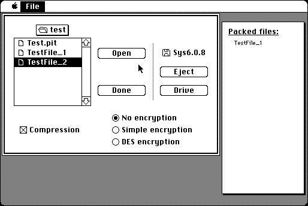

Download
PackIt-III-1.3.zip (20K) PackIt III V1.3 packaged into a zipped hfs disk image and checksum file. The disk image can be mounted with Mini vMac.
copyright: Harry Chesley
mod date: Jun 14, 1987
license: shareware
An early utility for archiving and compressing multiple files. Source code is available (below).

Download source
PackIt-III-1.3-src.zip (33K) PackIt III V1.3 source packaged into a zipped hfs disk image and checksum file. The disk image can be mounted with Mini vMac.
This code is from the PackIt Source Code page linked from the Early Mac Software page of author’s website.
If you find these downloads useful, please consider helping the Gryphel Project, which hosts them.
Here are the md5 checksums for the downloads, signed with Gryphel Key 5:
--------- GRY SIGNED TEXT --------- 47f738447842149eb044962c8ad7fb4a PackIt-III-1.3.zip 36e69b7aff3402714e867a0898b187f0 PackIt-III-1.3-src.zip ------- BEGIN GRY SIGNATURE ------- Gry/4Xa8CFcUzxdN/DsugcLiE1NjjT2AgwUQcO/zZuZNCmAvblKhbh3eVtc7/ed9 SI5UGiFDqfN/gwD9CaNCcolzcDiJ2UgdHPBwu2SPhTwMCZ1z+wxUOt5PNUDJT3ZU Y0M1p9d9gLuynmov+qNvZvzUC3VEEtBdQR/EJu1k7hLjZHRBbPvUxnx/23BqfsPp -------- END GRY SIGNATURE --------